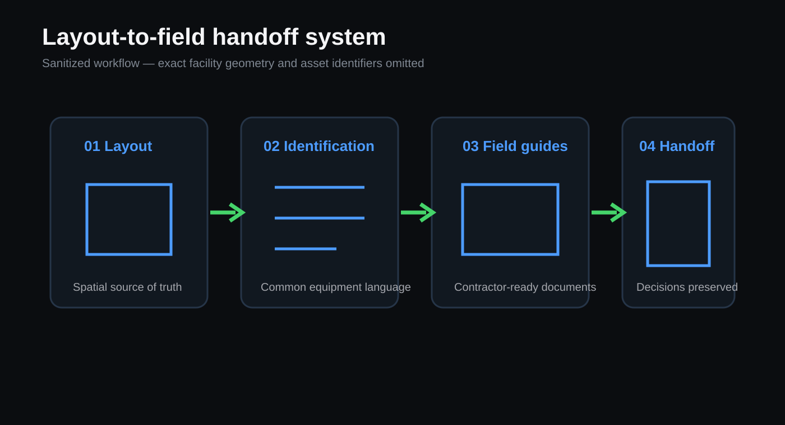

Overview
I owned the layout, equipment-tracking, and demolition-documentation workstream for a planned humanoid robotics training facility built from a legacy production area. The challenge was not only creating a floor plan; it was building a common information system that could guide planners, engineers, facilities teams, and contractors through multiple phases of work.
Layout-to-field system

- Layout: converted incomplete legacy drawings and field measurements into an iterated AutoCAD source of truth.
- Identification: created a consistent equipment-tagging convention that connected physical assets, CAD, and trackers.
- Field guides: produced 21 standalone contractor-ready station layouts containing 179 equipment callouts.
- Handoff: connected the layout, tracker, field guides, and future installation documentation so the system did not depend on one person's memory.
Cross-functional execution
Facilities and permitting
Coordinated layout revisions with architects and facilities stakeholders and incorporated feedback required for a permitted installation plan.
Controls and utilities
Integrated conveyor, variable-frequency-drive, conduit, compressed-air, and controls-adjacent requirements with support from controls engineering.
Field validation
The identification system and guide package were used during active removal work, allowing crews to locate and distinguish retained equipment without relying on the author to interpret the drawings. Field walks also surfaced missing critical hardware while it could still be recovered.